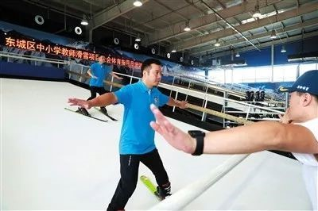
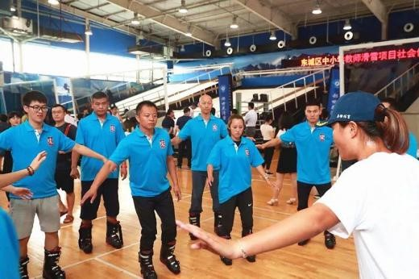
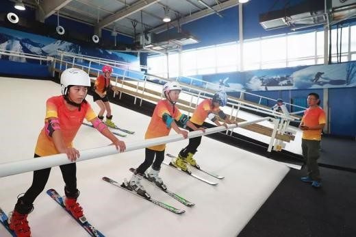
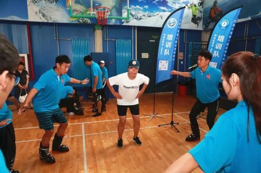

不是仿真冰场，这次是真冰场！10座！！
来源：北京东城
近日，东城区中小学教师滑雪项目社会体育指导员培训班在天坛体育中心模拟滑雪馆开班。首批32名教师穿着滑雪装备登上滑雪模拟器，在专业老师指导下进行滑雪首课。
5年内百名冰雪教师
具国家认定资质
据了解，此次培训班为期3天，是区教委与区体育局合作，利用滑雪模拟器开展的中小学教师首次培训，涉及旱地滑雪的单板、双板两个项目。区教委、区体育局以此次开班仪式为起点，联手加大合作力度，促进教体深度融合，分期分批为全区体育教师举办滑雪知识技能培训班。
据区教委副主任段勇介绍，未来将至少举办10期培训班，每期30至60人，共培训600余名教师。参加完培训的教师将取得滑雪项目社会体育指导员资格证，区教委会再从中选取优秀骨干教师到张家口崇礼继续进行实地培训，取得国家认定资质冰雪教师资格。5年内将实现冰雪普及培训全覆盖及百名具有国家认定资质的冰雪教师培训目标。
段勇说：“发展冰雪运动，教师是根本。我区将通过冰雪项目师资队伍的建设，形成一批我区自己的冰雪教练员，促进学校冰雪项目的开展。”
8学区年内都将拥有真冰场
今年年内，东城区将建设10座真冰冰场，覆盖全部8个学区，且于11月15日之前建成投入使用。
段勇表示，即将建设的10座冰场包括广渠门中学、景泰小学、前门小学、22中等，建设的10座冰场将优先满足7所冰雪示范校使用，既满足本校使用，还要满足学区内学校使用。
此外，东城区还将建设两块永久性冰场，一块将建设在天坛体育中心，面积1000平方米，年内开放使用；另一块建在地坛体育馆，面积1800平方米，同时还将建设一处冰壶场。段勇表示，冰场建成后，将以学校为单位建立冰雪兴趣小组、社团和运动队等，并以趣味性和竞技性相结合，举办各种班级、校级、区级比赛。
区教委设立冰雪专项经费
据悉，区教委在“健康成长2020”工程的基础上，制定了《东城区校园冰雪运动五年行动计划（2018-2022年）》。重点推进普及冬季奥林匹克教育、校园冰雪运动，加强冰雪项目师资队伍建设、建立多元化多层次赛事机制、加强冰雪后备人才梯队建设五大项目，让东城学子至少掌握一项冰雪运动技能，实现冬奥教育、冰雪运动在全区中小学校全覆盖。
此外，区教委还成立了专项领导小组，设立冰雪专项经费，加强冰雪硬件设施建设，建立督导检查机制，强化安全防范措施，切实保障全区校园冰雪运动各项工作扎实稳步推进，大力推动青少年冰雪运动的全面开展，助力北京冬奥会。